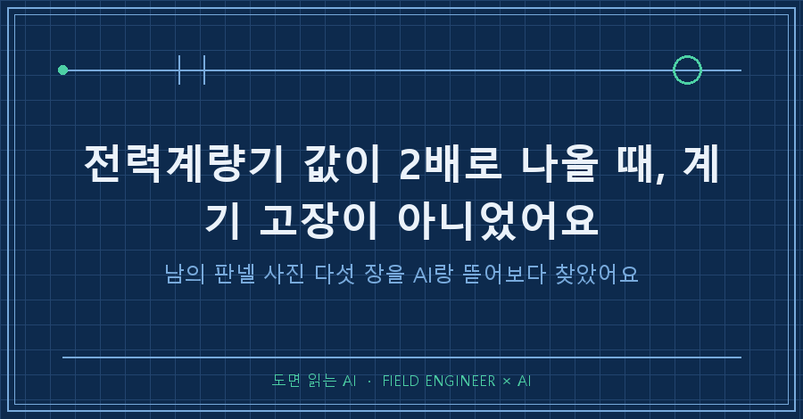
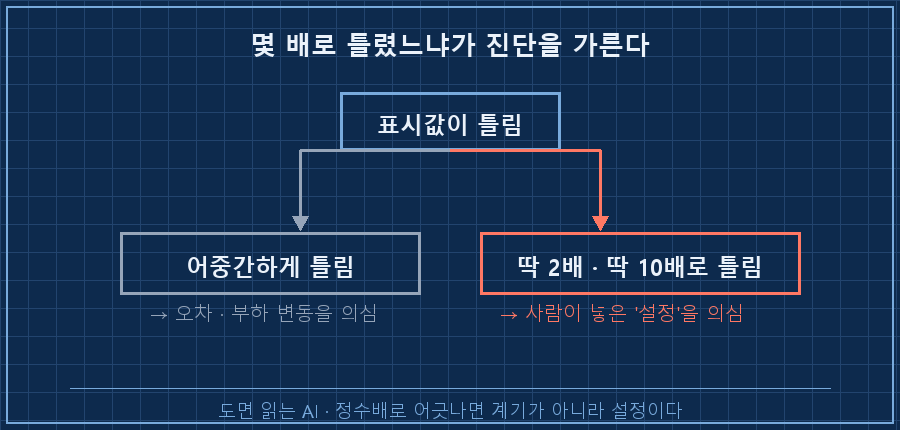
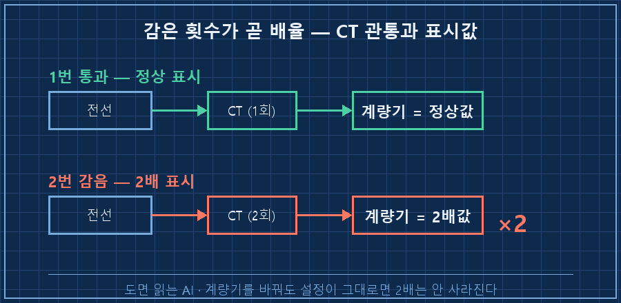
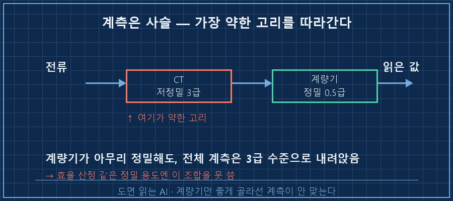

잘 만들었다는 남의 설비 사진을 받아서 뜯어보다가, 전력계량기 하나가 실제의 딱 2배를 가리키고 있는 걸 봤어요.
처음엔 계량기가 맛이 갔나 싶었죠.
먼저 답부터 적어둘게요.
계기값이 딱 배수로 틀려 있으면, 십중팔구 계기 고장이 아니라 사람이 넣은 설정이 틀린 거예요.
이번 전력계량기 2배 표시의 범인도 계량기가 아니라 전류를 재는 쪽 설정이었습니다.
저는 수소 플랜트 제어판넬을 15년째 만지는 사람이에요.
판넬 설계하고, PLC 로직 짜고, 현장 나가서 계측기 붙는 것까지 확인하는 일이요.
요즘은 그 일 상당 부분을 AI랑 같이 합니다.
1. 남의 판넬을 왜 사진으로 뜯어봤냐면요
시작은 벤치마킹이었어요.
다른 현장에서 잘 만들었다는 정제 설비 제어판넬 사진 몇 장을 받았거든요.
도면도 아니고 그냥 현장에서 찍은 사진이었어요.
예전 같으면 슥 훑어보고 "깔끔하네" 하고 덮었을 거예요.
근데 이번엔 사진을 통째로 AI한테 던지고 딱 두 가지를 물었어요.
"여기서 뭘 배울 수 있어? 그리고 뭐가 미심쩍어?"
배울 점만 찾는 게 아니라 미심쩍은 데도 같이 짚으라고 시킨 게, 결과적으로 신의 한 수였어요.
2. 배울 건 배우고, 걸릴 건 걸렸어요
AI가 정리해준 건 이랬어요.
[판넬 사진 판독 — AI가 정리한 것]
부품 넘버링 : 깔끔 (배울 점)
선단자(페룰) : 시공 깔끔 (배울 점)
전력계량기 : 표시값이 실제의 약 2배 ← 미심쩍음부품에 번호 붙인 방식이나 전선 끝에 선단자를 물린 마감은 확실히 깔끔했어요. 이건 그대로 배울 점이고요.
그러다 그 표시값에서 멈췄어요.
계통 규모를 생각하면 나올 수 없는 큰 값이 찍혀 있었거든요.
어림잡아도 실제의 두 배쯤.
3. '정확히 2배'라는 게 사실은 힌트였어요
여기서 중요한 건 틀린 정도예요.
값이 어중간하게 어긋나 있으면 오차나 부하 변동을 의심해요.
근데 딱 2배, 딱 10배처럼 정수배로 틀려 있으면 얘기가 달라져요. 그건 대개 사람이 넣은 설정이 틀린 신호거든요..

전력계량기는 굵은 전류를 직접 안 재요.
변류기(CT)라는 부품으로 전류를 작게 줄여서 받아요. 큰 전류를 재는 판에는 거의 다 이렇게 들어가요.
문제는 이 CT 언저리에서 값을 딱 배수로 튀게 만드는 지점이 두 군데 있다는 거예요.
[전력계량기 2배 표시 — 원인 좁히기]
계량기 등급 자체 문제? → 아님 (계기 정밀도는 멀쩡)
CT 배율(비) 설정 오류? → 유력
1차 전선 관통 횟수 문제? → 유력 (1번 통과여야 하는데 2번 감으면 딱 2배)CT비를 계량기에 잘못 입력했거나, CT 구멍에 전선을 한 번 통과시켜야 하는데 두 번 감았거나.
둘 중 하나면 표시값이 정확히 두 배로 뜹니다.
계량기를 백날 두들겨도 안 고쳐지고, 설정을 바로잡아야 끝나는 문제예요.

4. 계량기 하나 좋다고 끝이 아니에요
원인을 좁히다 하나가 더 걸렸어요.
그 계량기는 정밀 등급(0.5급)이었는데, 짝을 이룬 CT는 저정밀 등급(3급)이더라고요.
이게 왜 문제냐면, 계측 정확도는 사슬에서 가장 약한 고리를 따라가요.
아무리 계량기가 정밀해도 앞단 CT가 헐거우면, 전체 계측은 그 헐거운 CT 수준으로 내려앉아요.
효율을 따지거나 성능을 증명하는 정밀한 용도엔 이 조합을 쓸 수가 없는 거죠.
정리하면 이래요.
| 부품 | 등급 | 역할 |
|---|---|---|
| 전력계량기 | 정밀(0.5급) | 값을 읽음 |
| 변류기(CT) | 저정밀(3급) | 전류를 줄여 넘김 |
| 결과 | 3급 수준으로 하향 | 정밀 계측엔 부적합 |
계량기만 좋은 걸로 골라놓고 CT는 아무거나 물리면, 돈은 돈대로 쓰고 계측은 못 믿는 상태가 돼요.
계측은 짝이 맞아야 의미가 있어요.

5. 사진 몇 장으로 여기까지 나온다는 게 핵심이에요
돌아보면 대단한 장비를 쓴 게 아니에요.
도면도 아니고 현장 사진 몇 장, 그걸로 계측 설정 오류에 등급 미스매치까지 짚었어요.
AI가 똑똑해서라기보다, "미심쩍은 데를 짚어봐"라고 물어보는 눈 하나를 옆에 더 붙인 거예요.
혼자 봤으면 "깔끔하네" 하고 넘어갔을 사진에서, 질문 하나가 함정 두 개를 끌어낸 거죠.
자주 묻는 질문
Q. 표시값이 2배면 그냥 계량기를 새로 사면 되나요?
그게 함정이에요. 계량기는 멀쩡한데 앞단 설정이 틀린 경우가 대부분이라, 계량기를 바꿔도 그대로 2배가 떠요. CT 배율 설정하고 전선 관통 횟수부터 확인하는 게 순서예요.
Q. 사진만 보고 그렇게까지 알 수 있나요?
값이 계통 규모에 비해 말이 안 되게 큰지, 계량기와 CT 등급이 서로 맞는지 정도는 사진으로도 짚여요. 물론 최종 확인은 현장에서 설정값을 직접 열어봐야 하고요. 사진 판독은 "어디를 열어볼지"를 좁혀주는 단계인 거죠.
그래서 다음에 같은 상황을 만나면 이 순서로 봐요.
- 계기값이 딱 정수배로 틀렸다 → 계기 말고 설정부터 의심
- 전류 계측은 CT 배율과 관통 횟수를 먼저 확인
- 계량기 등급과 CT 등급이 짝이 맞는지 점검
숫자가 딱 떨어지게 틀렸을 때 계기를 탓하지 않는 것.
이건 AI를 쓰기 한참 전부터 현장이 가르쳐준 감각인데, 이번엔 그 감각을 질문으로 바꿔 AI한테 대신 훑게 한 거예요.
지금 쓰는 판넬에도, 값은 매일 보면서 CT 설정은 한 번도 안 열어본 계량기가 하나쯤 있진 않나요.
이렇게 사진이나 도면을 AI랑 같이 뜯어보는 방법은 makefield.ai에 하나씩 풀어두고 있어요.